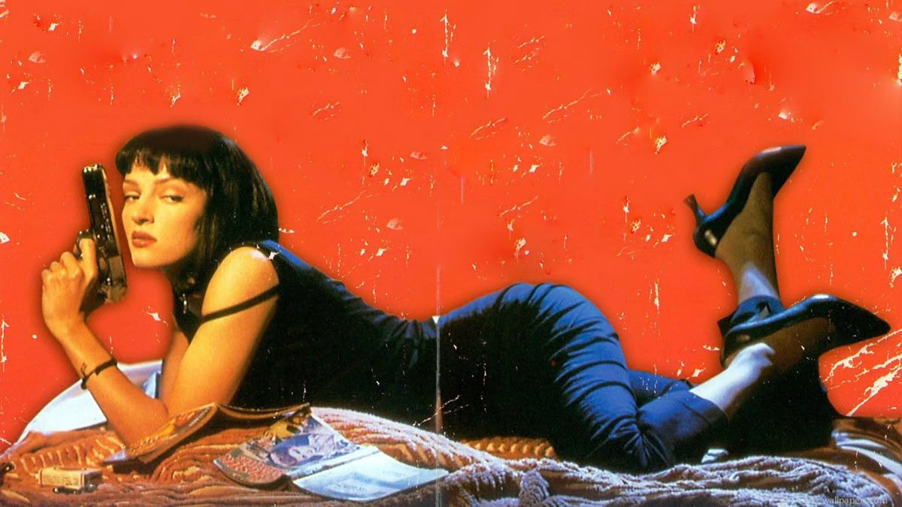
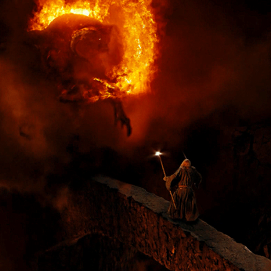
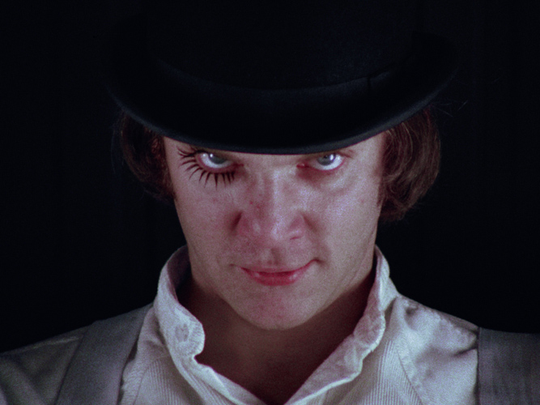

Taxi Driver

Pulp Fiction

Midsommar
Mis 4 películas favoritas

-
Taxi Driver
1976 - Martin Scorsese -
Donnie Darko
2001 - Richard Kelly -
El Señor de los Anillos
Saga Épica -
REC
2007 - Jaume Balagueró

¿Qué la hace de culto?
La Naranja Mecánica es una película de culto porque fusiona una estética visual disruptiva con una profunda provocación moral sobre el libre albedrío y el control social.
Datos curiosos de Taxi Driver
- En su preparación para Travis Bickle, Robert De Niro trabajó como taxista durante un mes, por turnos de entre 12 y 15 horas al día.
- El famoso "¿Me estás hablando a mí?" frente al espejo no estaba en el guion; Robert De Niro lo improvisó.
- Jodie Foster tenía apenas 12 años cuando interpretó a Iris. Su hermana mayor participó como doble de cuerpo en escenas explícitas.
Para este mes de terror
-
The Thing01
Terror / Ciencia ficción -
The Witch02
Terror folclórico -
The Shining03
Terror psicológico
"Mis frases favoritas..."
"Todos morimos, lo que importa es el cómo y el cuándo".
"Por muy dura que nos parezca la vida, mientras haya vida hay esperanza".
"El pasado es solo una historia que nos contamos a nosotros".